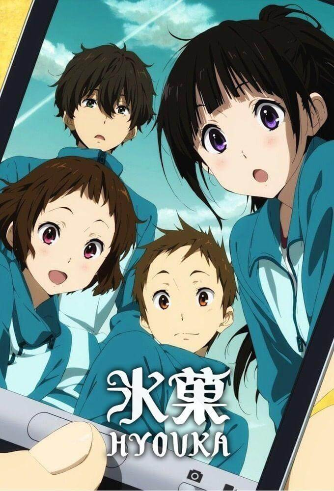
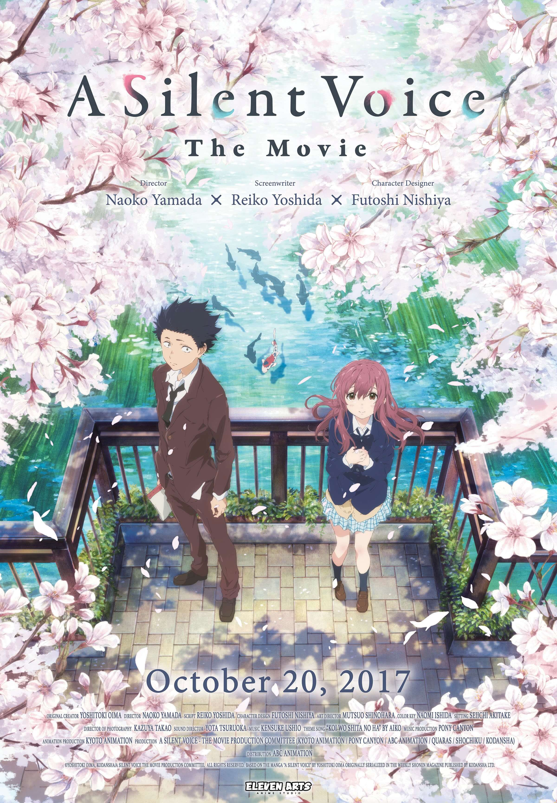
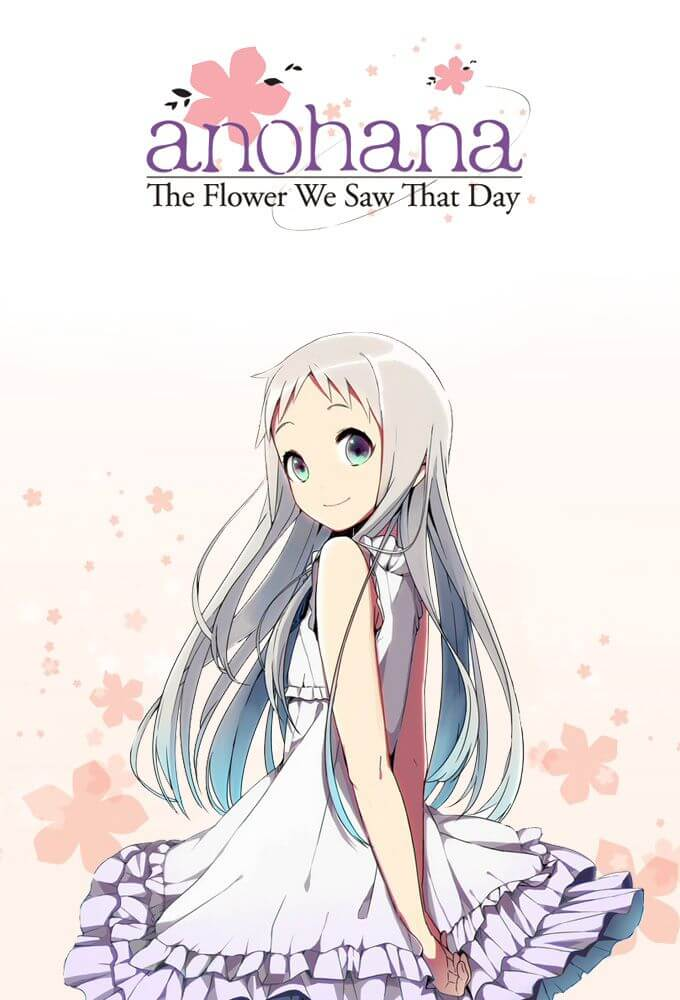

Picture taken by @KissManga
What is Slice of life?
“Slice of life“ genre is basically the general normal day to day life of the protagonist and life around the character. It's like the normal stuff or happenings in that one person's life. Its generally either not so plot specific or can have multiple things happening around. And also kind of as relatable stuff too. Call it normal expected life events. -Anime Corner [2020-12-28]
Hyouka
Picture taken by @Film affinity
Hyouka centers on Oreki Hotarou and his life in the Classic Literature Club. His mundane world is flipped upside down as they begin to solve various mysteries. Hyouka centers on Oreki Hotarou and his life in the Classic Literature Club. His mundane world is flipped upside down as they begin to solve various mysteries. (imdb)
A silent voice
Picture taken by @IMDB
In sixth grade, Shoya Ishida leads the class in bullying Shouko Nishimiya, a classmate who is new to the school and is deaf. When Shoya's actions are finally condemned by the principal, all of his friends and teachers turn against him, socially isolating him well into high school to the point that he eventually considers suicide, which he believes would absolve him of his bad deeds. To make amends, he reunites with Shouko, who is still lonely due to her shyness. Realizing that both are suffering due to his past sins, Shoya sets out on a path of redemption by trying to reconnect Shouko with their old classmates that Shouko never had the chance to befriend back then, including Shoya's former comrade, Naoka Ueno, who holds a grudge against Shouko for "causing" Shoya's isolation; Miki Kawai, their narcissistic former class president; and Miyoko Sahara, a kind girl who was the only one attempting to befriend Shouko years before. They also make new friends in Tomohiro Nagatsuka, a similarly friendless fat boy who owes Shoya; and Satoshi Mashiba, Miki's crush. The seven begin to work together when Tomohiro's plan to create a film for a competition, which he plans to only include Shoya and himself, attracts the attention of Naoka, Miki, Tomohiro, and Satoshi, with Shoya additionally inviting Shouko to join the project. Throughout the filming, the seven face their personal challenges and conflicts. Shouko eventually tries to confess her love to Shoya, but it does not get through to him and ends up in a misunderstanding. The group also has a falling out when Shoya tries to isolate himself again by insulting the crew, leading to Shouko feeling sorry for him. As she believes she is the sole reason for the parting of the group, Shouko attempts to kill herself and is rescued by Shoya, who gets badly hurt in the process, falling into a coma. This impacts the other six of the group as they start to resolve their problems while suspending the project until Shoya awakens. Once he recovers, Shoya reconciles with his film crew and finally completes the film, which, while a failure, has greatly helped him and his friends. A year after their high school graduation and their subsequent parting ways, the seven reunite for the Coming of Age Day. By then, Shoya has stopped ignoring the people around him and now has a lot of friends.[2] At the end of the Age Day, Shoya and Shouko are seen going into their elementary school reunion together holding hands so that Shouko will feel less nervous. (wikipedia 2022)
Anohana
Picture taken by @Tiahnna
In Chichibu, Saitama, a group of six sixth-grade-age childhood friends drift apart after one of them, Meiko "Menma" Honma, dies in an accident. Five years after the incident, the leader of the group, Jinta Yadomi, has withdrawn from society, does not attend high school,[4] and lives as a recluse. One summer day, the ghost of an older-looking Menma appears beside him and asks to have a wish granted, reasoning that she cannot pass on into the afterlife until it is fulfilled. At first, he only tries to help her minimally because he thinks he is hallucinating. But since Menma does not remember what her wish is, Jinta gathers his estranged friends together once again, believing that they are the key to solving this problem. All of the group joins him, though most of them do so reluctantly. However, things grow increasingly complicated when his friends accuse him of not being able to get over Menma's death, as they cannot see her and believe Jinta is hallucinating. Menma shows her presence to the group in order to prove that she is indeed real. All the group members eventually wish to shoulder the blame for Menma's death and long-hidden feelings among the group are rekindled. The group struggles as they grow from trying to help Menma move on and help each other move on as well. Characters (wikipedia 2022)